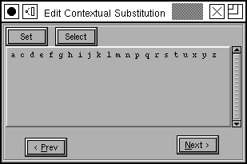

チュートリアル (その 7)
- フォントの作成
- グリフの作成 (アウトラインのトレース) 法
- 他のグリフの呼び出し方
- 次のグリフに関して (矛盾のないパスの向き)
- 統一のとれたセリフとステムの太さ
- 合字の組み立て方
- メトリックの確認法
- カーニング
- 異体関係にあるグリフ
- アンカーマーク
- 条件つき機能
- フォントのチェック法
- フォントの出力方法
- フォントファミリー
- 最後のまとめ
- スクリプト処理のチュートリアル
- 各種の用字系における注意点
条件つき機能
OpenType と Apple のフォントのどちらでも、条件つきの機能を使用することができます。それらは所定の文脈下でのみ実行される機能であり、インド系およびアラビア系の用字系の組版においては必須のものです。OpenType では、文脈は、文書のグリフストリームに対して照合を行うパターンの集まりとして指定されます。あるパターンがマッチすると、それが定義するすべての置換が行われます。Apple のフォントでは、文脈は状態機械——グリフストリームを解析して変換する小さなプログラム——として指定されます
条件つき機能には置換・合字またはカーニング (およびさらに不明瞭なふるまい) を含めることができます。ここでは条件つき置換の一例を示したいと思います。
 インド系文字やアラビア文字の例を取り上げる代わりに、私がより慣れ親しんでいるものを例に取り上げることにしましょう。“b”,“o”,“v”と“w”は次の文字と x ハイトのあたりで接続し、その他の文字はすべてベースラインのそばで接続するようなラテン文字の筆記体フォントを組版する問題を考えてみます。この場合、各グリフにつき、ベースラインのあたり (の左側) に接続線があるデフォルトの字形と、x ハイトのところに接続線がある別字形との 2 種類の異字形が必要となります。この 2 番目のセットを“高い”文字と呼び、それらの名前を“a.high”,“b.high”… といった具合につけることにしましょう。
インド系文字やアラビア文字の例を取り上げる代わりに、私がより慣れ親しんでいるものを例に取り上げることにしましょう。“b”,“o”,“v”と“w”は次の文字と x ハイトのあたりで接続し、その他の文字はすべてベースラインのそばで接続するようなラテン文字の筆記体フォントを組版する問題を考えてみます。この場合、各グリフにつき、ベースラインのあたり (の左側) に接続線があるデフォルトの字形と、x ハイトのところに接続線がある別字形との 2 種類の異字形が必要となります。この 2 番目のセットを“高い”文字と呼び、それらの名前を“a.high”,“b.high”… といった具合につけることにしましょう。
OpenType の例
| 以下に挙げる例は動作しません! この手順によって生成されるフォントテーブルは完全に正しいのですが、OpenType の設計者たちは、ラテン文字では複雑な条件つき機能を必要ではないと決定したので、OpenType の諸実装はラテン文字ではそれらをサポートしていないのです。この事実は規格書ではまったく言及されておらず、マイクロソフトのサイトに追加情報としてこっそり明かされているだけなのです。
なぜ私は動作しない例を提供しているのでしょう? それが私のできる最善の事だからです。もし私がインド系文字やアラビア文字の組版に通暁していたなら、それらの用字系の例を挙げていたことでしょう。しかし私はその素養を欠いています。手順は同じです。他の何らかの用字系でそれに従って作業すれば、動く物ができるでしょう。
いくつかのシステムといくつかのアプリケーションでは、‘calt’ (選択型の置換) 機能タグを |
可能なグリフを 3 つのクラスに分けます:“bovw”の 4 文字、それ以外のすべての英字、そして英字以外のすべてのグリフです。2 つのパターンを作成する必要があります。第 1 のパターンは“bovw”クラスに含まれるグリフの後に“bovw”クラスのグリフが続く場合で、第 2 のパターンは“bovw”クラスの後にそれ以外の英字が続く場合です。これらのどちらかが一致するときには、2 番目のグリフを“高い”異字形に変換する必要があります。
まず最初に、各“低い”文字に、"高い”異字形を対応づける単純置換を作成する必要があります。この置換を、“high”という 4 文字の OpenType タグで呼ぶことにしましょう。置換を定義するには、エレメント(L)→グリフ情報(I)...を先ほどと同じように使用しますが、“用字系/言語”の組合せとして“— 入れ子 —”という特殊な値を使用します (プルダウンメニューの選択肢の 1 つとして存在します)。
 注意を要する部分は、文脈定義のやりかたです。これは、
注意を要する部分は、文脈定義のやりかたです。これは、エレメント(L)→フォント情報(F)... ダイアログの [文脈依存] タブで行います。このダイアログでは 5 種類の文脈依存のふるまいが定義されていますが、今回の例で関係するのは、その中の [文脈連鎖依存の置換] です。
新しい項目を追加するときは [新規(N)...] ボタンを押します。これにより、一連のダイアログを呼び出すことができます。最初のダイアログでは 4 文字の OpenType タグと用字系/言語の組合せ (先ほどお見せしたとおりですが) を入力するように要求します。
この例では、我々は‘calt’を使います。これは適切なタグに見えますが、これがラテン文字では実装されていないことに気づくまでの話です。実際、ラテン文字で実装されている適切な機能は存在しないようです。この例でフォントを出力することはでき、それは構文的には正しいのですが、まったく何の効果もありません。素晴らしいことを行うのに必要な能力を OpenType が提供しているのに、Microsoft がラテン文字ではそれを使わせないということを知ると不満が溜まります。
 次のダイアログでは、置換の全体的なフォーマットを指定することができます。私達が使いたいのはクラスベースのシステムです——どのようなグリフクラスを用いるかは、既に述べたとおりです。
次のダイアログでは、置換の全体的なフォーマットを指定することができます。私達が使いたいのはクラスベースのシステムです——どのようなグリフクラスを用いるかは、既に述べたとおりです。
 その次のダイアログでやっと、興味をひく情報が表示されます。いちばん上には照合するパターンと、文字列が一致したときに行われる置換が並べて表示されています。その下にあるのは、その置換が利用するグリフクラスです。文脈連鎖依存のダイアログは、グリフ列を 3 つのカテゴリーに分割します: 現在のグリフの前にあるグリフ群 (これらは後戻りグリフと呼ばれます)・現在のグリフそのもの (これは 2 個以上指定可能で、この (それらの) グリフに対しては、それに適用される単純置換をもたせることができます)・そして現在のグリフの後のグリフ (これらは先読みグリフと呼ばれます) です。
その次のダイアログでやっと、興味をひく情報が表示されます。いちばん上には照合するパターンと、文字列が一致したときに行われる置換が並べて表示されています。その下にあるのは、その置換が利用するグリフクラスです。文脈連鎖依存のダイアログは、グリフ列を 3 つのカテゴリーに分割します: 現在のグリフの前にあるグリフ群 (これらは後戻りグリフと呼ばれます)・現在のグリフそのもの (これは 2 個以上指定可能で、この (それらの) グリフに対しては、それに適用される単純置換をもたせることができます)・そして現在のグリフの後のグリフ (これらは先読みグリフと呼ばれます) です。
各グリフカテゴリはグリフをそれぞれ異なるクラスセットに分類することができますが、この例ではすべてのカテゴリで同じクラスを用いることにします (これにより、置換処理を Apple のフォーマットに変換するのがやりやすくなります)。最初の行 (“グリフリストのリスト”フィールドに含まれる) は、以下のように読みます: 「もし、クラス 1 に含まれる後戻りグリフ (現在のグリフの直前のグリフ) に続いて、クラス 2 に含まれる現在グリフが現れたならば、一致文字列 (これは現在グリフです) 中の位置 0 ——唯一の位置——には、単純置換‘high’を適用しなければならない」。
グリフクラス定義を見ると、クラス 1 には“高い”異字形の後にくるグリフがあることが分かるので、この定義には納得がいきます。
2 行目もこれと同様ですが、クラス 1 が合致するところが異なります。クラス定義を見ると、クラス 1 と 2 にすべての英小文字が含まれていることが分かるので、これらの 2 行が意味することは、“bovw”のどれかの後に英小文字が来た場合、その文字は“高い”異字形に変換しなければならないということです。
 グリフクラスの編集は、その上でダブルクリックするだけで行うことができます。新しく作成するには、(クラスリストの下にある)
グリフクラスの編集は、その上でダブルクリックするだけで行うことができます。新しく作成するには、(クラスリストの下にある) [新規(N)...] ボタンを押してください。これにより、現在のクラスに含まれる全グリフの名前を表示する別のダイアログが作成されます。[選択] ボタンを押すと、そのクラスに含まれている全グリフがフォントウィンドウ上で選択され、その反対に、[設定] ボタンを押すとフォントウィンドウ内で選択されている文字群がそのクラスの内容として設定されます。
[次(N)] ボタンを押すと、クラスが定義され、概要ダイアログに戻ります。
パターンを編集するにはその上でダブルクリックし、新しいパターンを作成するには (リストのリストの下にある) [新規(N)...] ボタンを押してください。ここでも、パターン文字列は 3 つのカテゴリに分割されています。
 現在のグリフに先行するグリフ群、現在のグリフそのもの、そして現在のグリフに続くグリフ群です。編集中のパターンのカテゴリーのどれを編集するかはダイアログの上にあるタブで選択できます。
現在のグリフに先行するグリフ群、現在のグリフそのもの、そして現在のグリフに続くグリフ群です。編集中のパターンのカテゴリーのどれを編集するかはダイアログの上にあるタブで選択できます。
これらの下にあるのは、現在のカテゴリに帰着するようなパターンのサブセット、このカテゴリで定義されているクラス、そして最後に、現在のグリフ(群)に対する置換です。クラスをどれかクリックすると、パターンのクラス番号が加えられます。
置換を編集するにはその上でダブルクリックするを行ってください。また、新しい置換を追加するには (“並べ替え済みのリスト...”の下にある) [新規(N)...] ボタンを押してください。シーケンス番号は、現在のグリフ群に含まれるどのグリフを変更するかを指定し、タグは 4 文字の置換名を指定します。
文脈依存のふるまいに関する警告: すべてのソフトウェアがこれをサポートするわけではありません。さらに紛らわしいことには、ソフトウェアはある用字系でこれをサポートし、別の用字系ではサポートしないことが許されています。
Apple 高度組版機能
Apple は有限状態機械で文脈を指定します。これは、本質的にはグリフのストリームを調べて、どの置換を適用するかを決定する小さなプログラムです。各状態機械には、グリフクラス定義 (OpenType の例で示したのとちょうど同じような) の集合と状態の集合があります。処理は、グリフストリームの先頭から、状態 0 で始まります。計算機は、現在のグリフがどのクラスに含まれるかを決定し、次に現在の状態を参照して、そのクラスからの入力が与えられたときにどのように振舞うかを調べます。振舞いの中には、別の状態への遷移可能性、入力を次のグリフへ進めること、置換を現在のグリフに適用するか以前のグリフ (“マークつき”グリフ) に適用するかが含まれます。
 前と同じ、ラテン文字の筆記体フォントの例を使うことにしましょう……今回も各文字をその“高い”別字形に置換する単純置換が必要となります。この処理は OpenType で行ったのと同じで、実際に同じ置換を使用することができます。今回もグリフを 3 つのクラスに分類します (Apple は、使用するかしないかにかかわらずいくつかの追加クラスを定義していますが、概念上 OpenType の例と同じ 3 つのクラスを使用します)。この場合、状態機械には 2 つの状態が必要で (これも追加の状態が Apple により定義済みですが、これも無視しましょう)、具体的には開始状態 (基本状態——変更は行いません) と、もう一つ、“bovw”クラスからグリフを読み込んだ直後の状態です。
前と同じ、ラテン文字の筆記体フォントの例を使うことにしましょう……今回も各文字をその“高い”別字形に置換する単純置換が必要となります。この処理は OpenType で行ったのと同じで、実際に同じ置換を使用することができます。今回もグリフを 3 つのクラスに分類します (Apple は、使用するかしないかにかかわらずいくつかの追加クラスを定義していますが、概念上 OpenType の例と同じ 3 つのクラスを使用します)。この場合、状態機械には 2 つの状態が必要で (これも追加の状態が Apple により定義済みですが、これも無視しましょう)、具体的には開始状態 (基本状態——変更は行いません) と、もう一つ、“bovw”クラスからグリフを読み込んだ直後の状態です。
 ここでも
ここでも エレメント(L)→フォント情報(F)... ダイアログの [Macの状態機械] タブをクリックして、文脈依存の置換が利用できるようにします。前と同様、文脈依存の振舞いにはいくつかのタイプがあり、ここで興味があるのは文脈依存の置換です。状態機械の上でダブルクリックするか、[新規(N)...] ボタンを押すと、指定した状態機械の概要が表示されます。
 ダイアログのいちばん上には、状態機械の機能/設定を指定するフィールドが表示されています。これは Apple の方式では OpenType の 4 文字の機能タグと等価です。その下にあるのはクラス定義のセットで、いちばん下にあるのは状態機械そのものです。
ダイアログのいちばん上には、状態機械の機能/設定を指定するフィールドが表示されています。これは Apple の方式では OpenType の 4 文字の機能タグと等価です。その下にあるのはクラス定義のセットで、いちばん下にあるのは状態機械そのものです。

クラスの上でダブルクリックすると、OpenType で使用しているのと似たダイアログが立ち上がります。
 状態機械の遷移 (状態/クラスの組合せごとに 1 個の遷移が存在します) の上でクリックすると、状態遷移ダイアログが立ち上がります。指定された状態において指定されたクラスに含まれるグリフを受けつけたときにどのように振舞うかは、ここで制御します。この例では、状態 2 (これは、“bovw”グリフを読み込み済みであることを意味します) で、クラス 4 (これは“bovw”のグリフがもう 1 個来たことを意味します) に含まれるグリフを受け取ったところです。この場合、次の状態も再び状態 2 で (新しい“bovw”グリフを読み込んだ直後となるでしょう)、もう 1 字を読み込んで“high”置換を現在のグリフに施すことになります。
状態機械の遷移 (状態/クラスの組合せごとに 1 個の遷移が存在します) の上でクリックすると、状態遷移ダイアログが立ち上がります。指定された状態において指定されたクラスに含まれるグリフを受けつけたときにどのように振舞うかは、ここで制御します。この例では、状態 2 (これは、“bovw”グリフを読み込み済みであることを意味します) で、クラス 4 (これは“bovw”のグリフがもう 1 個来たことを意味します) に含まれるグリフを受け取ったところです。この場合、次の状態も再び状態 2 で (新しい“bovw”グリフを読み込んだ直後となるでしょう)、もう 1 字を読み込んで“high”置換を現在のグリフに施すことになります。
ダイアログのいちばん下にあるのは、状態機械の遷移を移動することができるボタンの列です。
[OK] を何度も押すとこのダイアログの連鎖から抜け、フォントに新しい状態機械を追加します。